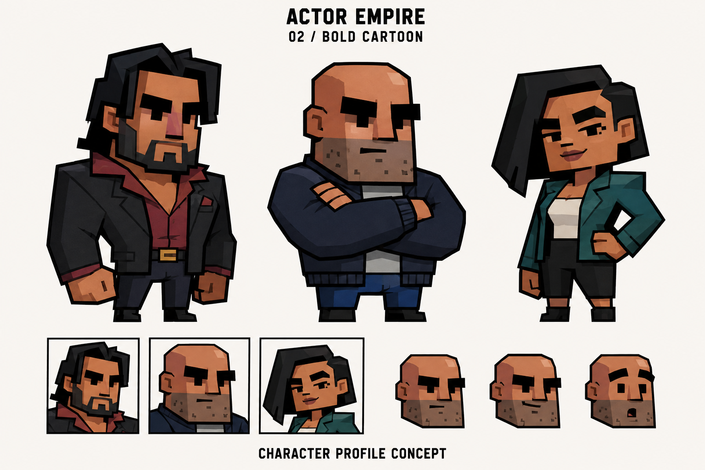
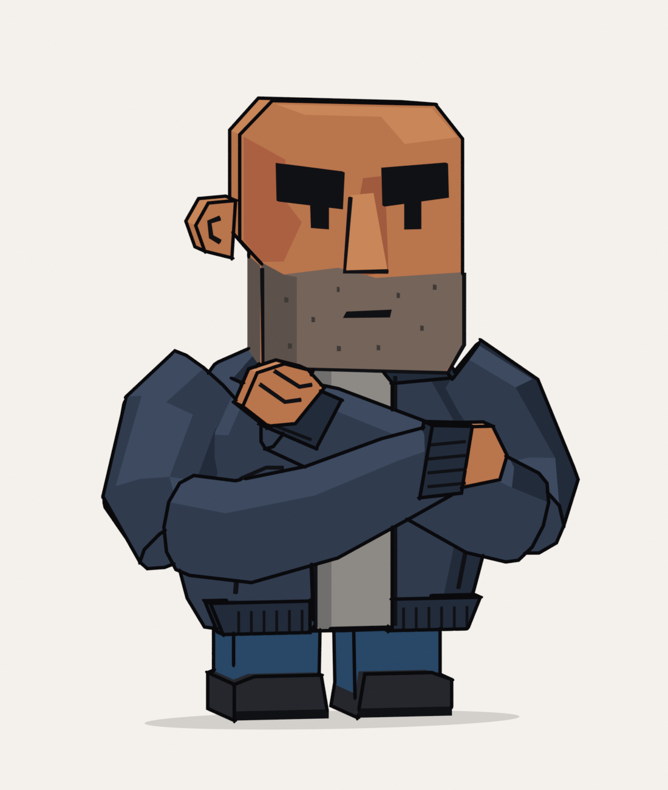
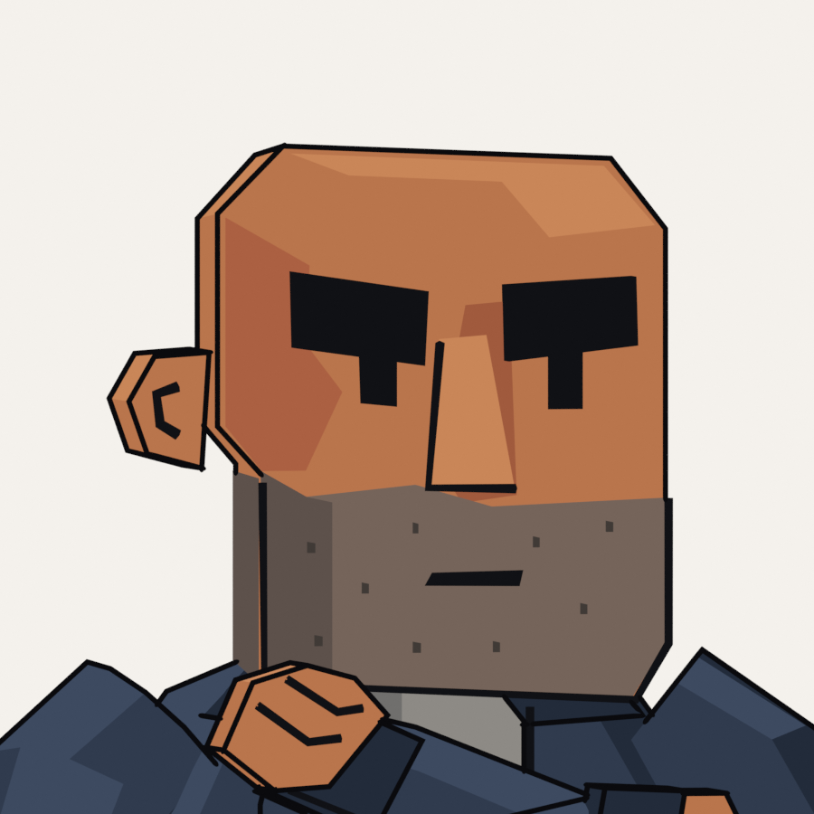

Actor Empire / Character art / Study 02
One character. A closer direction.
A new Blender study of the bald character: a broader jacket, folded arms, a stronger jaw, heavy brows, tiny eyes, and flat graphic shading. Compare the actual render with the target.

The concept establishes the proportions, expression, shape design, and level of finish we are aiming for.

Rendered from the saved .blend file. The sculpted forms and surface detail still need refinement to reach the target.

The same model, cropped as a profile.
This is a static art study. It uses Blender materials and rendered outlines; those outlines are not yet part of the live 3D preview. A modular library and an animation rig come after the character design is settled.